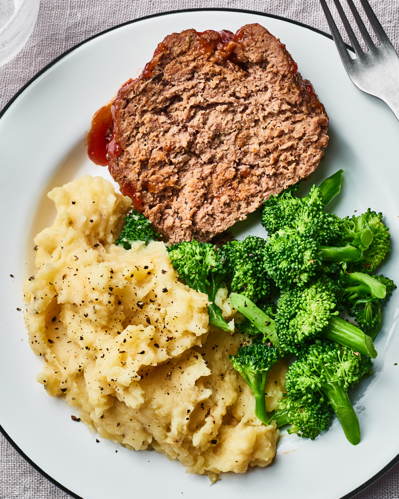

Meatloaf and Mash Potatoes with Brocoli and Gravy

Delicious and easy to make meatloaf with mashed potatoes
Ingredients
- Potatoes
- Ground Beef
- Brocoli
- Gravy
- Butter
- Milk
- Onion
- Breadcrumbs
Steps
- Dice onions and mix together with ground beef, breadcrumbs, milk and seasoning
- Peel and boil the potatoes until soft
- Form the ground beef into a meatloaf and preheat the oven to 350 degrees
- Bake the meatloaf for 30-45 minutes
- Drain the potatoes and mash them in a bowl, add butter and milk and salt to taste
- Cook the brocoli, e.g steam, boil, bake of fry
- In a seperate pot cook the gravy, add some sauce from the meatloaf pan
- Slice the meatloaf and serve with mashed potatoes, brocoli and gravy